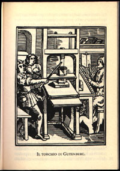

 Johannes Gensfleisch zur Laden zum Gutenberg was a German goldsmith and inventor who achieved fame for his invention of the technology of printing with movable types during 1447.
As his invention became famous orders from printing books poured in. With too much work to handle he hired Clumseisch zur Hidemberg to help him. Clumseisch was also a brilliant inventor but under Gutemberg's shadow he never had the chance to showcase his own inventions (word has spread that we would be 400 years more advanced if he had done so).
Clumseisch work consisted of carrying trays containing block letters that allowed Gutemberg to print each individual book page. But he was very clumsy and constantly dropped the tray. And when this happened, often individual blocks would fall from the tray leaving empty spaces.
He was lucky though, because when this happened he could use his most wonderfull invention: a C++ portable compiler crafted from solid wood. He invented an algorithm that would tell him in how many different ways he could rearrange the fallen letter blocks and still form meaningfull words.
Your problem will be to recreate Clumseisch's algorithm
The first line of the input will contain the number of lines (1<=nl<=10) of the tray Clumseisch was carrying. Then, nl lines will contain the words that were in that same tray. Underscores ("_") will represent fallen letters. There will never be more than 200 total words.
The next line will contain the number of different letters on the ground (lowercase english alphabet). Beware that not all letters on the ground were part of the tray being carried (Gutemberg's shop was many times a complete mess). After that, comes a line for each letter containing the actual letter and the number of times Clumseisch found it lying in the floor.
The last part of the input contains an english dictionary. This dictionary will contain several english words (in no particular order) in the same line. The first line will contain the number of lines of the dictionary. The dictionary will not contain more than 1000 words.
In all the input, words will never have more than 40 letters.
For each test case, output a single line containing the number of possible ways of rearranging the letters into the tray using valid english words.
7 Th_s _s the f_rst b___ ever printed on my shiny new pre__ Its good to print bo__s l_ke this because you never know what can h___en next. The tray might fall and you have to pick all the letters and put them in order again. That ____d be lots of fun. 10 i 4 o 4 k 2 s 2 a 1 p 2 u 1 w 1 l 1 t 2 4 because book books boots boot can ever first good happen is its know like on my new never next press print printed shiny the this to what would you
4
2006 Programming Contest of Porto University
Round 3, 11th of October of 2006
(Author: André Restivo - FEUP)